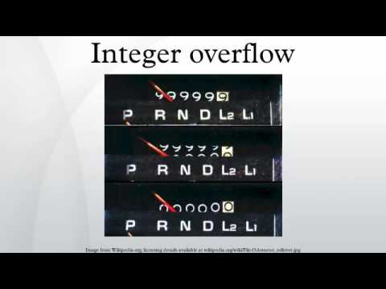

T1.3 Représentation des entiers relatifs⚓︎
1.3.1 Signe d'un entier et taille en bits⚓︎
Au chapitre T1.1, nous avons vu comment représenter un nombre entier positif en notation binaire.
Par exemple, l'entier 6 (en base 10) s'écrit 110 en binaire.
Pour représenter tous les entiers relatifs, il faut étendre cette représentation aux entiers négatifs. Une première nécessité est de réserver un bit pour le signe de l'entier (+ ou -).
Signe d'un entier relatif
On choisit de représenter le signe d'un nombre entier relatif:
- sur le bit de poids fort (le plus à gauche), pour reprendre la notation classique;
- par un
0pour le + : ainsi la représentation des entiers positifs est inchangée; - par un
1pour le -.
Mais où placer ce bit de signe?
En effet, 6 se coderait alors en 0110 et -6 en 1110? Mais 1110 représente l'entier 14 !
Pour lever cette ambiguité, il faut décider :
- de la taille du mot binaire qui va représenter l'entier, c'est-à-dire le nombre de bits;
- d'une façon efficace de représenter les nombres négatifs.
Taille en bits d'un entier
Pour représenter un nombre entier relatif, on a donc besoin de fixer un nombre n de bits sur lequel le coder.
En général, n est une des valeurs suivantes : 8, 16, 32 ou 64 (1, 2, 4 ou 8 octets). Cela dépend du langage de programmation utilisé et de l'architecture matérielle de l'ordinateur.
Le bit de poids fort représente donc le signe et les n-1 bits suivants la valeur absolue du nombre.
Sur 8 bits par exemple, l'entier 6 est codé par 0|000 0110. Et on serait tenté de coder son opposé -6 par 1|000 0110, n'est-ce pas?
Faux.
Au moins deux (gros) inconvénients à cette méthode:
- Le nombre 0 serait codé par
0|000 0000et par1|000 0000. Deux représentations pour un même nombre, ça ne sent pas bon. - L'addition telle qu'on la connaît ne fonctionnerait plus. Posez par exemple 6 + (-6) ...
1.3.2 Complément à 2⚓︎
On adopte donc une autre méthode, qui consiste à représenter un entier relatif par un entier naturel.
En binaire non signé: sur 8 bits, on peut représenter tous les entiers positifs de 0 à 255.
Ceux qui ont un bit de poids fort égal à 0 correspondent aux entiers de 0 à 127 et ceux qui ont un bit de poids fort égal à 1 correspondent aux nombres de 128 à 255.
En binaire signé: toujours sur 8 bits, les nombres de 0 à 127 conservent la même représentation (positifs, car avec 0 en bit de poids fort). En revanche, les écritures binaires avec un 1 en bit de poids fort représentent les entiers négatifs de -128 à -1.
Ainsi sur 8 bits, on représente à nouveau 255 valeurs : de -128 à +127, c'est-à-dire de \(-2^7\) à \(2^7 -1\). Et puisque le bit de poids fort est réservé au signe, il est logique que la valeur absolue soit inférieure à 128 puisqu'on ne dispose plus que de 7 bits...

On représente donc l'entier \(-1\) par 11111111 en binaire sur 8 bits. C'est sa notation en complément à 2 (ou plutôt \(2^n\)).
Écrire la représentation binaire d'un entier négatif
Pour obtenir le complément à 2 d'un entier négatif:
- on code sa valeur absolue en binaire;
- on inverse tous les bits (on remplace les
0par des1et les1par des0); - on ajoute 1.
Par exemple:
- \(-6\) s'écrit
11111010sur 8 bits: \(6_{10} = 0000 0110_2 \rightarrow 1111 1001_2 \rightarrow 1111 1010_2\). - \(-42\) s'écrit
11010110sur 8 bits: \(42_{10} = 0010 1010_2 \rightarrow 1101 0101_2 \rightarrow 1101 0110_2\).
La représentation binaire d'un entier \(x\) négatif sur \(n\) bits est celle de l'entier naturel (non signé) \(x + 2^n\).
Par exemple pour \(x=-42\), on représente \(-42+256=214\) en binaire non signé, c'est-à-dire 11010110.
1.3.3 Integer Overflow⚓︎

Dépassement de capacité
On ne peut coder qu'un nombre fini d'entiers selon la valeur de \(n\): entre \(-2^{n-1}\) et \(2^{n-1}-1\).
Tout calcul sur des entiers dont le résultat ne fait pas partie de cet intervalle donnera un résultat faux: il sera tronqué sur \(n\) bits! On parle de dépassement de capacité , overflow en anglais.
En Python, tous les entiers sont signés. Contrairement à certains langages de programmation, le type entier non signé n'existe pas nativement. Par défaut les entiers sont codés sur 64 bits (ou 32 bits sur les machines 32 bits), ce qui laisse un peu de marge.
Pour spécifier qu'on travaille sur 8 bits, on utilisera le module numpy:
| 🐍 Script Python | |
|---|---|
1 2 3 | |
1.3.4 Exercices⚓︎
Exercice 1
Quel est l'intervalle de nombres entiers relatifs qu'on peut représenter:
- Sur 4 bits?
- Sur 16 bits?
- Sur 64 bits?
On utilise l'encadrement donné dans l'encadré précédent avec la valeur de \(n\) correspondante:
- Pour \(n=4\), entre -8 et 7
- Pour \(n=16\), entre -32768 et 32767
- Pour \(n=64\), entre -9223372036854775808 et 9223372036854775801
Exercice 2
- Convertir en complément à 2 les nombres 12 et -53.
- Effectuer l'addition en binaire de ces deux nombres, et vérifier que le résultat est correct.
- Comme 12 est positif, sa représentation binaire est
00001100.
En revanche, -53 est négatif. Donc:
- on écrit sa valeur absolue, 53, en binaire:
00110101 - on effectue le complément à 2 en inversant les bits :
11001010 - on ajoute 1 et on obtient
11001011
2. L'addition bit par bit donne : 11010111
Le résultat de 12 + (-53) est -41. Or sa représentation est
- valeur absolue :
00101001 - complément à 2 :
11010110 - +1 :
11010111
On obtient bien le même résultat.
Exercice 3
Quels sont les entiers relatifs dont la représentation binaire en complément à 2 (sur 8 bits) est:
0110011110011001
-
L'écriture binaire commence par un 0, c'est donc un positif. On fait «comme d'habitude»:
01100111est l'écriture binaire de 103. -
L'écriture binaire commence par un 1, c'est donc un négatif.
On effectue les opérations dans l'autre sens:
- On soustrait 1 : on obtient
10011000 - complément à 2 : on obtient
01100111 - on récupère la valeur absolue : 103
Le nombre est donc -103.
Exercice 4
- Vérifier que sur 8 bits,
10000000représente -128 et11111111représente -1. - Vérifier en effectuant l'addition en binaire, que 42 + (-42) = 0
10000000 -> 01111111 -> '10000000' qui est 128 (la valeur absolue). Donc -128
11111111 -> 11111110 -> '00000001' qui est 1 (la valeur absolue). Donc -1
On a 42 qui est représenté par 00101010 et -42 par 11010110. L'addition bit par bit donne 100000000 mais comme on est sur 8 bits, le premier bit 1 est perdu (overflow). Donc on obtient bien 00000000, c'est-à-dire 0.
Exercice 5 : Integer Overflow
À l'aide du module numpy, effectuer en console les calculs suivants:
- 127 + 1
- 127 + 2
- 127 + 127
Par exemple pour le premier calcul:
>>> import numpy
>>> numpy.int8(127) + numpy.int8(1)
>>> import numpy
>>> numpy.int8(127)+numpy.int8(1)
<console>:1: RuntimeWarning: overflow encountered in byte_scalars
-128
>>> numpy.int8(127)+numpy.int8(2)
<console>:1: RuntimeWarning: overflow encountered in byte_scalars
-127
>>> numpy.int8(127)+numpy.int8(127)
<console>:1: RuntimeWarning: overflow encountered in byte_scalars
-2